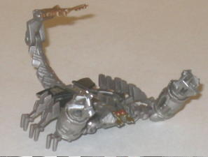
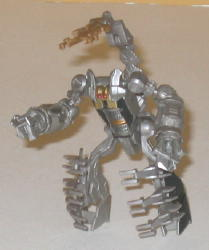

Bumblebee
vs. Scorponok ("Allspark Battles" Legends)
Bumblebee
vs. Scorponok ("Allspark Battles" Legends)
Price
: ~$8 U.S.
Overall Rating
: 5.9
 Bumblebee
Bumblebee
Allegiance
: Autobot
Size
: Legend
Difficulty of Transformation
: Very
Easy
Color Scheme
: Dull "cheese" yellow,
black, and some light metallic silvery blue, metallic gunmetal gray, and
silver
Rating
: 5.1
(NOTE: Because this is a repaint, this is not a full-blown review. This mainly covers any changes made to the mold and the color scheme, and merely compares it to the original Legends class Bumblebee toy. For a review on the mold itself, read the review of the original Legends class Bumblebee toy here .)
Bumblebee's not really
a repaint so much as a touch-up this time around-- there's only a few noticeable
differences if you compare the two toys side-by-side. Basically, the car
details that should have been present on the first toy are now here-- Bumblebee
has the appropriate "burn marks" on spots on his car mode, and the stripes
on the front part of his vehicle mode are scraped up a little. In addition--gasp!--his
rear windows are actually painted in car mode, too. In exchange for the
extra vehicle mode paint, the blue paint apps on Bumblebee's robot legs
are gone, but it's an easy tradeoff. The yellow is a SLIGHTLY different
shade, being just a tad duller, but it's barely noticeable.
No mold changes have
been made to Legends Bumblebee.
Scorponok


Allegiance
: Decepticon
Size
: Legend
Difficulty of Transformation
: Very
Easy
Color Scheme
: Milky moderately light
gray, black, and some light brown, dull red, silver, and metallic bronze
Rating
: 6.7
Scorponok's beast mode
is remarkably cool for a Legends-sized toy, though his body is slightly
too wide, and the back ends rather abruptly. Still, those minor things
aside, this is an excellent mode, and with nearly as much articulation
as the
deluxe version
, I might add- the
head can move up and down, the arms can move at the shoulders and elbows,
the claws can spin, and the tail can move at three different points as
well. Plus, he's COVERED in great mold detailing, and his paint detailing
isn't too shabby, either-- he could've used a bit more bronze on his arms,
but those are the only parts I can find particularly lacking in paint detail.
Surprisingly, Scorponok's
robot mode is actually BETTER than his deluxe toy's! The proportions are
much more humanoid, and his legs can actually bend at the hips AND elbows.
Plus, his tail actually comes up from behind his head, as opposed to having
it just lay down on the ground behind him like on the deluxe toy. The only
area where the deluxe toy is better than the Legends class toy (besides
the nifty spinny-gimmick) is that the scorpion legs are tucked at the sides
of the legs, as opposed to on this toy just sticking out from the front
of the legs and looking rather awkward. Still, all-in-all, even with more
humanoid proportions, it still is just obviously Scorponok's beast mode
standing up, making it considerably less cool than it otherwise would have
been had he had a "genuine" robot mode.
Overall, though Scorponok is a fairly cool representation of his deluxe toy given the small size, the robot mode still looks a bit ridiculous, and Bumblebee is one of the poorest movie Legends molds, even with a slightly-improved paint scheme. So, given this, you're probably better off picking up most of the other Legends before you purchase these two.
Reviews by Beastbot